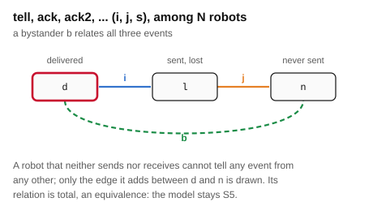
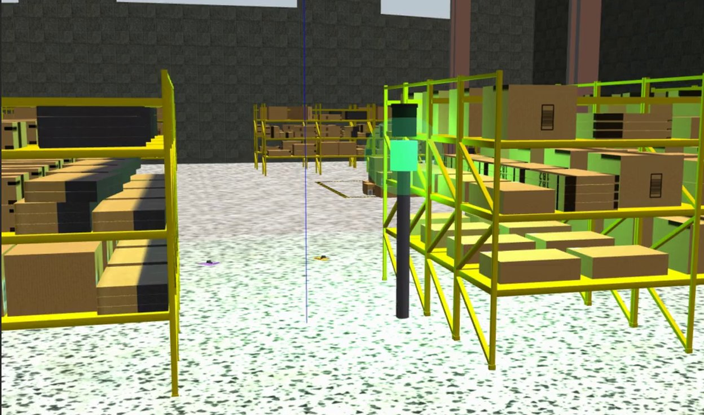
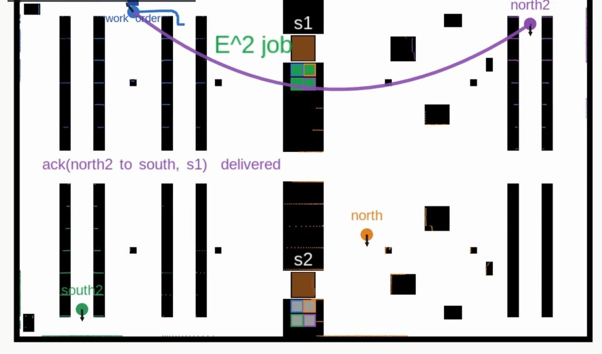
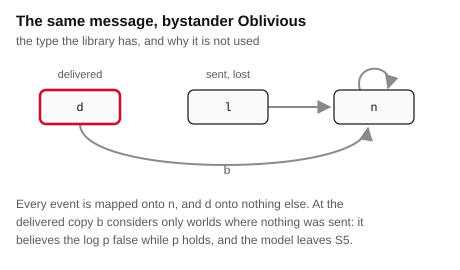
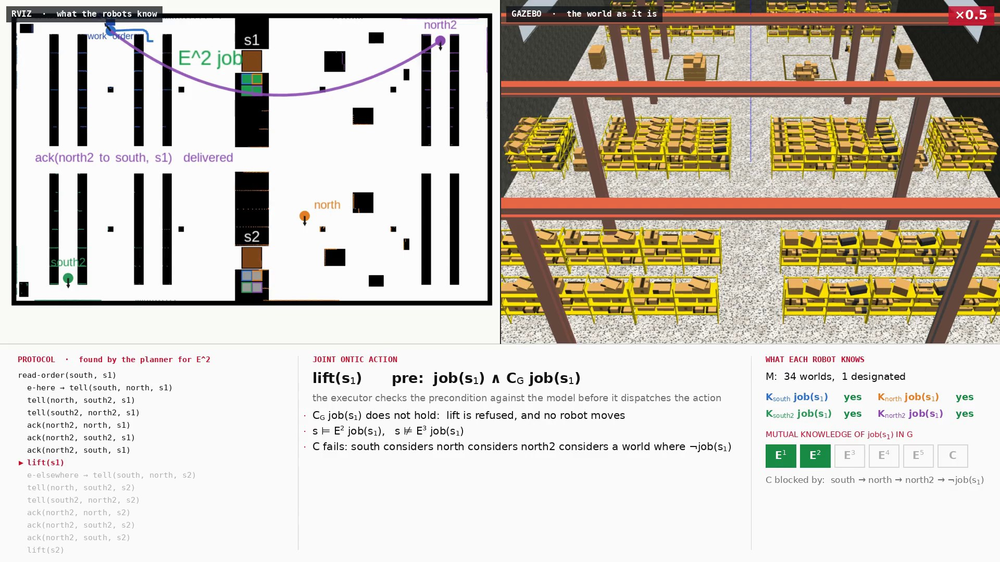
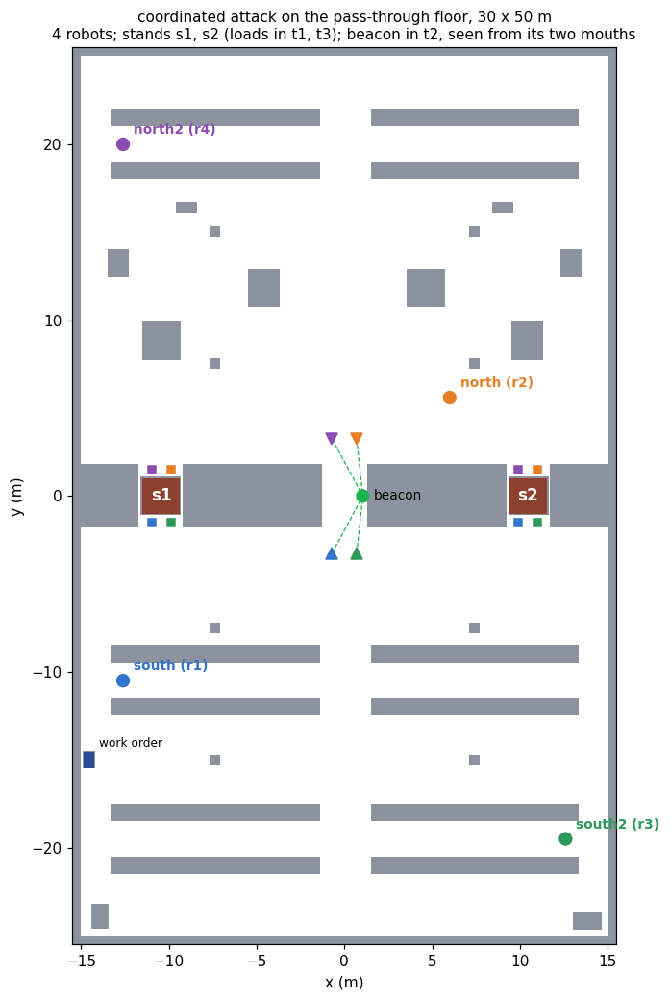
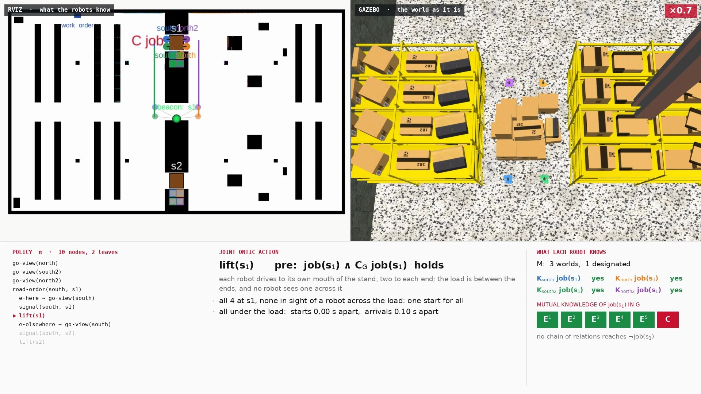

Common knowledge · N agents · 30 × 50 m hall · ROS 2
The coordinated attack on a warehouse floor has two robots lift one load, with common knowledge of the stand as the precondition of the lift. Here the same domain is written for \(N\) robots and \(m\) message levels. Every robot takes a share of the load, so lift requires common knowledge over all \(N\), and a radio message at level \(\ell\) says that its sender knows that everyone knows, \(\ell-1\) times over, which stand the order names.
With more than two robots a message has bystanders, robots that neither send nor receive it. Given an observability type that relates the three events of the message to one another, the bound of the two-robot study survives unchanged: each message adds at most one level of mutual knowledge, and the radio floor has no policy for any number of robots. One signal from common viewpoints still gives common knowledge over all of them. What scale changes is the cost. Among \(N\) robots each level took \(N-1\) messages wherever the planner settled it, and with four robots on the floor six delivered messages reached \(E^2\) and the lift was refused, while one beacon gave \(C\) and the four lifted together, their arrivals 0.10 s apart.
The planner settles the radio floor only for small cases: two robots up to five levels, three robots at one. Beyond that its searches run out of budget, and the floor is settled by the proposition below and not by search. The count of \(N-1\) messages per level is a pattern over the cells, minimal in each within this family of messages, and not a theorem. The runs stop at four robots, the places the floor has; the planner's tables go to ten. Every message in the runs is delivered, and the lift is drawn by moving the load in the simulator, as in the two-robot study.
Package coordinated_attack_demo, run with robots:=4 messages:=2; policy from eplansys, grounding by plank, search by Aletheia. Full account in The Coordinated Attack among Many Robots (PDF): the bystander type, the proofs, the planning tables, the cost of each level, the four-robot runs and the defects found on the way.
The runs
| action | what the run reported | model after |
|---|---|---|
| plan | no policy for lifted after 120.3 s; the search was cut off at depth 8, which is its budget and not a proof | 2 worlds, 2 designated |
| read-order(south, s1) | at the terminal after 16 s; the order names s1; e-here | 2 / 1 · \(E^0\) |
| tell(south, north, s1) | “\(K_{south}\,\mathit{job}(s_1)\)” delivered; south cannot tell whether it was | 4 / 1 · \(E^0\) |
| tell(north, south2, s1) | “\(K_{north}\,\mathit{job}(s_1)\)” delivered | 6 / 1 · \(E^0\) |
| tell(south2, north2, s1) | “\(K_{south2}\,\mathit{job}(s_1)\)” delivered | 8 / 1 · \(E^1\) |
| ack(north2, north, s1) | “\(K_{north2}E\,\mathit{job}(s_1)\)” delivered | 10 / 1 · \(E^1\) |
| ack(north2, south2, s1) | delivered | 16 / 1 · \(E^1\) |
| ack(north2, south, s1) | delivered | 34 / 1 · \(E^2\) |
| lift(s1) | knowledge requirement does not hold: (C (south north south2 north2) job_s1); no robot moves | refused |
| action | what the run reported | model after |
|---|---|---|
| plan | a policy of 10 items and 2 leaves, in 4.2 s; it does not use the radio | 2 worlds, 2 designated |
| go-view(north) | at its viewpoint after 17 s; the beacon in line of sight, 3.3 m | 2 / 2 |
| go-view(south2) | at its viewpoint after 60 s; 3.4 m | 2 / 2 |
| go-view(north2) | at its viewpoint after 62 s; 3.9 m | 2 / 2 |
| read-order(south, s1) | at the terminal after 17 s; the order names s1; e-here | 2 / 1 · \(E^0\) |
| go-view(south) | at its viewpoint after 53 s; 3.8 m | 2 / 1 · \(E^0\) |
| signal(south, s1) | the s1 tier lit; in line of sight of it: all four, 3.3 to 3.8 m | 3 / 1 · \(C\) |
| lift(s1) | all four at their mouths of s1 after 26 to 28 s, none in sight of a robot across the load; one start for all; under the load after 13.7 and 13.8 s: starts 0.00 s apart, arrivals 0.10 s apart; load raised 0.12 m, 50 s after the lift began | 1 world |
With the order naming s2, run headless, the read gave e-elsewhere, the s2 tier was lit with all four robots in line of sight, \(C\,\mathit{job}(s_2)\) held, and the load on s2 came up with the arrivals 0.70 s apart.
What the runs show

The radio One level per message, in any group A robot that hears nothing relates all three events of a message. The model stays S5, each message still adds at most one level, and no number of messages reaches \(C\), for any \(N\). Read the proof →
The beacon One signal, common knowledge over all With every robot at a viewpoint the signal is a public announcement, whatever \(N\). The policy has depth \(N+3\), and replanning finds it for ten robots in under a second. See the policy →
The cost Each level took \(N-1\) messages Fewer than the levels suggest, because a message says more than its content: a robot that knows the stand can only have learnt it from one that knew first. See the counts →The domain
tools/scaled.py writes the domain for \(N\) robots and \(m\) message levels. The robots are south, north, south2, north2, and so on, alternately on the storage and the dispatch floor; \(G\) is the set of all of them, and south reads the order. A message at level \(\ell\) from \(i\) to \(j\) is the lossy message \(L(i,j,\pi,p)\) of the two-robot study with
so that each level goes from each sender to each receiver at most once. Level 1 is tell, level 2 ack, level 3 ack2.
| action | type | events | observers |
|---|---|---|---|
| read-order(i, s) | semi-private sensing | \(e_h\): \(\mathit{job}(s)\); \(e_e\): \(\neg\mathit{job}(s)\) | \(i\) fully, every other robot partially |
| tell, ack, … (i, j, s) | lossy message | \(d\), \(l\): \(K_i E_G^{\ell-1}\mathit{job}(s) \wedge \neg\mathit{sent}_\ell(i,j)\), post \(\mathit{sent}_\ell(i,j)\); \(n\): \(\top\) | \(i\) sender, \(j\) receiver, every other robot a bystander |
| go-view(i) | public ontic | \(\mathit{beacon} \wedge \neg\mathit{at\text{-}view}(i)\), post \(\mathit{at\text{-}view}(i)\) | everyone |
| signal(i, s) | conditional announcement | \(\sigma\): \(\mathit{at\text{-}view}(i) \wedge K_i\,\mathit{job}(s)\); \(n\): \(\top\) | at a viewpoint fully, elsewhere obliviously |
| lift(s) | public ontic | \(\mathit{job}(s) \wedge C_G\,\mathit{job}(s)\), post \(\mathit{lifted}\) | everyone |
With \(N = 2\) each message says what it said in the two-robot study: \(E_G\) is then \(K_{south} \wedge K_{north}\), and \(K_i E_G^{\ell-1}\mathit{job}(s)\) is equivalent in S5 to the alternating \(K_i K_j K_i \cdots \mathit{job}(s)\) with \(\ell\) operators, the conjuncts that repeat an agent collapsing by introspection. The log differs: the two-robot domain lets each level go out once in all, this one once per sender and receiver. At \(N = 2\) its beacon floor has the same policy, found in 137 expansions where the two-robot domain takes 115, and its radio floor is exhausted at depth 9 with 2 224 expansions, where the two-robot one is exhausted at depth 5 with 34.
Bystanders
A robot that does not hear the radio cannot tell a delivery from a loss or from silence. Its type, Bystander, relates all three events: \(Q(\mathrm{Bystander}) = E \times E\). The type the action-type library already has for a robot that does not observe an action, Oblivious, does not serve. It maps every event onto \(n\), and since \(d\) and \(l\) set the sender's log, an oblivious bystander at the delivered copy would consider possible only worlds in which nothing was sent: it would believe that no message went out when one did, and the model would leave S5. The type is added to epddl/lossy.epddl; the two-robot floors never assign it, and their grounded tasks are unchanged apart from the added relation.

If \(M\) is S5, so is \(M \otimes L(i,j,\pi,p)\), with any number of bystanders. Each relation of the product is the restriction, to the pairs that exist, of the product of an equivalence on worlds with an equivalence on events, and \(E \times E\) is one.
Let \(G\) be finite with \(i \neq j\) in \(G\) and every other member a bystander. Let \(M\) be S5 with \(M \models \varphi\), \(\varphi\) not mention \(p\), and \(\pi\) be preserved along \(R_i\). If \(L = L(i,j,\pi,p)\) is applicable,
where \(\mathrm{dist}\) is the length of the shortest path, over the union of the relations of \(G\), from a designated world to a world where \(\varphi\) fails, and \(E_G^k\varphi\) holds exactly when \(k < \mathrm{dist}\).
Proof. Take a shortest path \(w = v_0 \xrightarrow{a_1} v_1 \cdots \xrightarrow{a_m} v_m\) from a designated \(w\) to \(v_m \not\models \varphi\). Since \(\mathit{pre}(n) = \top\) and \((n,n)\) is in all three relations, the \(n\)-copies \((v,n)\) form a copy of \(M\), and \((v_m,n)\) still falsifies \(\varphi\). If \(a_1 = j\), then \((v_0,d) \mathrel{R'_i} (v_0,l) \mathrel{R'_j} (v_1,n)\). If \(a_1 = i\), then \(\pi\) holds at \(v_1\) and \((v_0,d) \mathrel{R'_i} (v_1,l) \mathrel{R'_j} (v_1,n)\). If \(a_1 = b\) is a bystander, then \((v_0,d) \mathrel{R'_b} (v_1,n)\) directly. In each case at most two steps reach \((v_1,n)\), and \(m-1\) more along the copy reach \((v_m,n)\): a path of length at most \(m+1\). ∎
The first two cases are the two-robot proof. The third is the only one the bystanders add, and it shortens the path: a bystander's edge from the delivered event to the event in which nothing was sent is an edge the two-robot proof had to build in two steps. The witness path never uses the fact that the message was delivered, so the bound is the same delivered or lost.
If \(M \not\models C_G\varphi\), no finite sequence of lossy messages makes \(C_G\varphi\) hold. On the radio floor every execution is read-order followed by messages; after the read every robot but south still relates the actual world to the other stand's, so \(\mathrm{dist} = 1\), and the hypothesis on \(\pi\) holds for every message, \(K_i E_G^{\ell-1}\mathit{job}(s)\) by positive introspection and the log because only its sender sets it. For every \(N \geq 2\) and every \(m\), no sequence of actions makes lift applicable, and no policy for lifted exists.
The beacon
Let \(M\) be S5 with \(\mathit{at\text{-}view}(a)\) true at every world for every \(a \in G\). If the signal \(S(i, K_i\chi)\) is applicable, then \(M \otimes S \models C_G\,\chi\). Every type is Fully, so every world reachable from the designated one is a \(\sigma\)-copy, and \(\sigma\) exists only where \(K_i\chi\), hence \(\chi\), held. Nothing in the argument counts the robots.
The move to a viewpoint is public, so once every robot has moved, where each stands is common knowledge, and so is who sees the light. The policy the planner returns is the two-robot one with a viewpoint for every robot: each robot but the reader goes to its viewpoint, the order is read, the reader goes to its viewpoint and signals, and the robots lift. Its depth is \(N + 3\), with one leaf per stand, and the trace tool's product update reports \(C_G\,\mathit{job}(s)\) at both leaves for every \(N\) up to ten.
Planning
tools/scaling.py grounds each cell with plank and solves it with Aletheia at one thread, once with AO* and once replanning over the all-outcomes determinization, each with 300 s. AO* deepens one action at a time and checks its budget inside each iteration: cut off at depth d means the budget ran out in the iteration at depth \(d\), so no policy of smaller depth exists. A cell gives the depth, the expansions and the time.
| N | atoms | actions | AO* | replanning |
|---|---|---|---|---|
| 2 | 24 | 28 | depth 5, 137, 0.0 s | depth 5, 8, 0.0 s |
| 3 | 46 | 65 | depth 6, 868, 0.2 s | depth 6, 11, 0.0 s |
| 4 | 76 | 118 | depth 7, 8 038, 4.6 s | depth 7, 14, 0.0 s |
| 5 | 114 | 187 | depth 8, 108 298, 112.3 s | depth 8, 17, 0.0 s |
| 6 | 160 | 272 | cut off at depth 8, 165 772 | depth 9, 20, 0.1 s |
| 7 | 214 | 373 | cut off at depth 7, 99 175 | depth 10, 23, 0.1 s |
| 8 | 276 | 490 | cut off at depth 7, 84 110 | depth 11, 26, 0.2 s |
| 9 | 346 | 623 | cut off at depth 7, 78 032 | depth 12, 29, 0.4 s |
| 10 | 424 | 772 | cut off at depth 7, 68 467 | depth 13, 32, 0.7 s |
AO* pays about a factor of ten in expansions for each robot; at six its budget runs out one iteration short of the policy. Replanning finds the same policy in \(3N + 2\) expansions. Every policy found has two leaves, and the product update confirms \(C_G\) at both.
| N | m | atoms | actions | AO* | replanning |
|---|---|---|---|---|---|
| 2 | 1 | 12 | 16 | exhausted at depth 3, 14, 0.0 s | refuted, 5, 0.0 s |
| 2 | 2 | 16 | 20 | exhausted at depth 5, 52, 0.0 s | refuted, 15, 0.0 s |
| 2 | 3 | 20 | 24 | exhausted at depth 7, 282, 0.1 s | refuted, 81, 0.0 s |
| 2 | 4 | 24 | 28 | exhausted at depth 9, 2 224, 1.7 s | refuted, 563, 0.8 s |
| 2 | 5 | 28 | 32 | exhausted at depth 11, 18 990, 45.9 s | refuted, 3 989, 18.4 s |
| 2 | 6 | 32 | 36 | cut off at depth 12, 89 529 | cut off, 16 350 |
| 3 | 1 | 19 | 29 | exhausted at depth 7, 294, 0.1 s | refuted, 67, 0.1 s |
| 3 | 2 | 28 | 41 | cut off at depth 10, 36 517 | cut off, 353 |
| 3 | 3 | 37 | 53 | cut off at depth 10, 74 958 | cut off, 26 |
| 4 | 1 | 28 | 46 | cut off at depth 9, 20 500 | cut off, 435 |
| 4 | 2 | 44 | 70 | cut off at depth 9, 48 601 | cut off, 17 |
| 5 | 1 | 39 | 67 | cut off at depth 8, 37 629 | cut off, 15 |
There is no policy to find here, and what is measured is the price of proving it. AO* proves it by exhausting the space; replanning by refuting the determinization, which is sound for unsolvability, since any branch of a policy is a plan of the determinization. A third robot leaves one level within reach, and a fourth none: the space is every order in which up to \(N(N-1)m\) messages can go out. Where a search was cut off nothing is claimed from it; that none of these floors has a policy is Corollary 1.
Aletheia, at commit 314bc29, prints expansions only when it finds a policy; the counts for searches that ended without one come from a build that also prints them there and changes nothing else. Replanning overran its budget on the larger radio floors, by 40 % at five robots, in a step that does not check the clock. Eight searches ran at once alongside other work on sixteen threads, so the expansions are the measure and the times are orders of magnitude.
The cost of a level
tools/ladder.py gives the planner the radio floor with the goal \(E_G^k\,\mathit{job}(s)\) in place of lifted. AO* deepens one action at a time, so the first policy it finds has the fewest messages that reach \(E_G^k\), among the messages of the domain. The product update then replays it, and must agree on the depth after every message and find that \(C_G\) fails at the end. An entry \(\geq c\) is a search cut off in the iteration that would hold \(c\) messages: fewer do not suffice, and \(c\) was not found.
| N | \(E^1\) | \(E^2\) | \(E^3\) | \(E^4\) | \(E^5\) |
|---|---|---|---|---|---|
| 2 | 1 | 2 | 3 | 4 | 5 |
| 3 | 2 | 4 | 6 | 8 | ≥ 10 |
| 4 | 3 | 6 | ≥ 9 | ||
| 5 | 4 | ≥ 8 |
The budget was 600 s per cell, and an hour for four robots and \(E^3\). Blank cells were not run.
Wherever the search finished, \(E^k\) cost \(k(N-1)\) messages, and wherever it was cut off it had shown that fewer do not suffice. For two robots this is Proposition 2, attained. For more it is a pattern, minimal in each cell within this family of messages, and not proved in general.
It is fewer messages than their levels suggest. A robot that knows where the load is can only have learnt it from one that knew first, and the messages of the history are the only ones that can have occurred, so a message says more than its content: when north tells south2 \(K_{north}\,\mathit{job}(s)\), south2 also learns that south knew, since north could have heard it from no one else. The protocols the planner finds use this. With three robots they relay along a line, south, north, south2, and back. With four, \(E^2\) is a relay out to north2 and a broadcast back from it, and this is the protocol the mission runs on the four-robot radio floor:
| action | worlds | depth of \(\mathit{job}(s_1)\) |
|---|---|---|
| read-order(south, s1) | 2 | \(E^0\) |
| tell(south, north, s1) | 4 | \(E^0\) |
| tell(north, south2, s1) | 6 | \(E^0\) |
| tell(south2, north2, s1) | 8 | \(E^1\): every robot knows the stand, and north2 knows that every robot does |
| ack(north2, north, s1) | 10 | \(E^1\) |
| ack(north2, south2, s1) | 16 | \(E^1\) |
| ack(north2, south, s1) | 34 | \(E^2\) |
| lift(s1) | not applicable: \(C_G\,\mathit{job}(s_1)\) fails |

The floor

The floor generator checks the four geometric claims of the two-robot study for every robot and every pair, by casting rays over the occupied cells of the plan: no robot starts in sight of another or of the beacon; from its viewpoint each robot sees the beacon; no robot under one end of a load sees one under the other end; and every place a robot is sent is reachable. Two robots under the same end of a load see each other, which is the same side, so meeting at the stand still gives no common knowledge over the four.
The performers are those of the two-robot study, made general. The signal node checks that every robot the model places at a viewpoint has the beacon in line of sight; the radio node prints the content of a message at any level; and for lift every robot drives to its mouth of the stand, one start is fixed for all, and each drives in under its corner along the line from its mouth. The executor checks (C (south north south2 north2) job_s1) against the model before it dispatches the lift.

Defects
A base that drifts after turning. The first three four-robot runs of the beacon floor lifted with two robots short of the load and arrivals 11.4 to 11.6 s apart. A simulated Waffle that has turned on the spot and is then driven straight, with an angular command of exactly zero, curves back toward the heading it arrived on, by about 47 degrees over the metre and a half into the bay; a probe in an isolated simulator reproduced it, and showed no drift without the prior turn. The inner two robots drifted as well, and counted as under the load only because depth into the bay was all that was measured. The lift now creeps along the line from each robot's mouth and steers back onto it. Whether the two-robot runs, on the axis of the bay, drifted was not measured.
A client that stopped waiting. The first run of the four-robot radio floor reported that the planner returned nothing after 15.0 s. The planner was still searching; the mission's planner client had waited its default of 15 s. It is now given the planner's budget and fifteen seconds more.
A count of levels that was not the model. The first version of the ladder counted only the highest level each robot had heard from each other. Random sequences replayed through the product update refuted it: after tell(south, north), tell(north, south) and ack(south, north) the depth is \(E^3\), where the count gave \(E^2\). The count missed what a message says beyond its content, and the ladder is now searched by the planner over the domain itself.
The simulator at start. gzserver crashed at startup in one run and one probe, while the second robot's plugins loaded and before the third was spawned. The run was repeated unchanged.
Limits
References
Reproduction
ros2 launch coordinated_attack_demo coordinated_attack_launch.py robots:=4 messages:=2 ros2 launch coordinated_attack_demo coordinated_attack_launch.py robots:=4 messages:=2 order:=s2 ros2 launch coordinated_attack_demo coordinated_attack_launch.py robots:=4 messages:=2 floor:=radio bash tools/validate.sh # thirteen checks, no simulator python3 tools/scaling.py --out /tmp/ca_scaling # the two planning tables python3 tools/ladder.py --table 2,3,4,5 --depths 1,2,3,4,5 --out /tmp/ca_ladder python3 tools/ladder.py --replay protocols/radio-n4-m2.json --out /tmp/ca_replay ROBOTS=4 MESSAGES=2 bash tools/record_demo.sh beacon s1 /tmp/raw_n4.mkv /tmp/run_n4.log ROBOTS=4 MESSAGES=2 bash tools/record_demo.sh radio s1 /tmp/raw_n4r.mkv /tmp/run_n4r.log